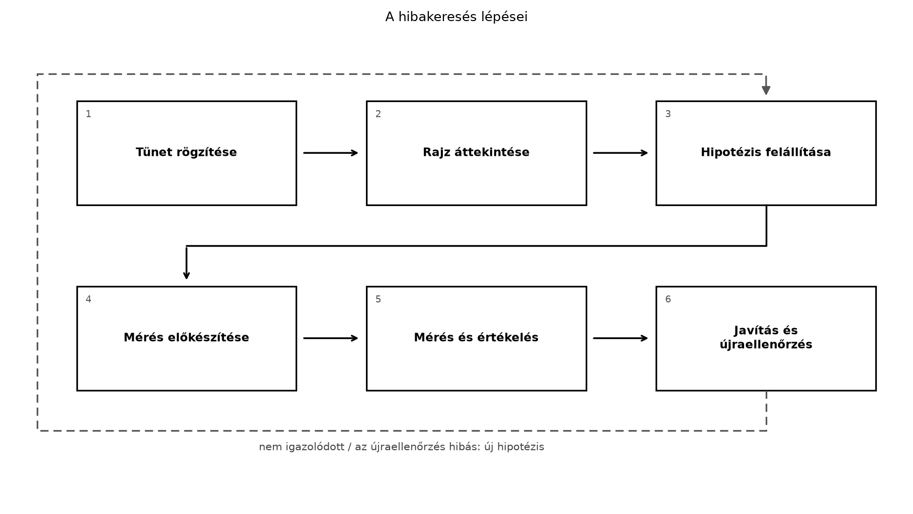

Egy lakásfelújítás után a megrendelő azt jelzi, hogy a nappali lámpája nem kapcsolható fel, a konyhai aljzatról pedig leold a kismegszakító. A szerelő két utat választhat: alkatrészt cserél találomra, vagy a tünetből kiindulva, rajz és mérés alapján megkeresi a hibát. A vizsgán és a munkahelyen is az utóbbi az elvárt. Ebben az alfejezetben szándékosan hibás tanműhelyi modelleken gyakoroljuk a hibakeresést, mert a későbbi motorbeüzemelésnél és a gyakorlati vizsgán ugyanezt a gondolkodásmódot kell használni.
Nézzünk egy egypólusú kapcsolós világítási alapáramkört, amelyben a gyakorlat során az egyik szakaszon szándékos szakadást rejtettek el:
A rajzon az L1 fázis a felső, az N nulla az alsó vezető. Ha a Q1 és az S1 közötti szakaszt megszakítjuk, a lámpa nem világít, de a kismegszakító nem old le. A feladatunk, hogy ezt a hibát ne találgatással, hanem mérésekkel határoljuk be.
Definíció. A hibakeresés olyan módszeres eljárás, amelyben a meghibásodott villamos berendezés tünetéből kiindulva, a kapcsolási rajz és mérések segítségével behatároljuk a hibás elemet, szakaszt vagy kötést.
A Jegyzőkönyv, szabványossági felülvizsgálat és hibakeresés alfejezetben már bevezetett sorrendet itt is követjük: tünet → hipotézis → mérés → ellenőrzés. Ez a gondolati lánc azért fontos, mert a villamos hiba gyakran nem látható; csak a mérés dönti el, hogy a feltételezésünk igaz-e.

Szabály. A hibakeresést mindig a tünet pontos leírásával kezdjük. Rögzítsük, mi nem működik, mi működik, mikor jelentkezett a hiba, és történt-e előtte valamilyen beavatkozás. Ezután vegyük elő a kapcsolási rajzot, és csak azután állítsunk fel ellenőrizhető feltételezést.
Biztonsági korlát. A feladat tanműhelyi (törpefeszültségű) környezetre vagy jogosult oktató felügyeletére vonatkozik; hálózati feszültségen önállóan ne végezd. A hibakeresési gyakorlatokban is alkalmazd az öt biztonsági szabályt: lekapcsolás, visszakapcsolás elleni biztosítás, feszültségmentesség ellenőrzése, földelés és rövidre zárás, szomszédos feszültség alatti részek lefedése.
Szakadás. A vezető folytonossága megszűnt. Tünet: az áramkör nem záródik, a fogyasztó nem működik, de nincs túláram. Mérése: folytonosságvizsgálóval vagy multiméter ellenállásmérő állásában a szakaszon végtelen ellenállást (OL) mérünk.
Zárlat. Két különböző potenciálú pont közvetlenül, kis ellenálláson keresztül összekötődik. Tünet: a kismegszakító vagy biztosító azonnal leold. Mérése: a zárlatos pontok között közel 0 Ω ellenállást mérünk, és a szigetelési ellenállás is nulla.
Szigetelési hiba. A fázis és a védővezető (vagy idegen vezető) közötti szigetelés meggyengül. Tünet: az áram-védőkapcsoló (FI-relé) leold, bár a kismegszakító nem feltétlenül. Mérése: szigetelésmérővel a fázis és PE között a határérték alatti értéket mérünk.
Rossz bekötés. Az áramkör fizikailag összeáll, de nem a rajz szerint működik. Például egy váltókapcsoló kivezetéseit felcserélték, vagy a nullát kapcsolják a fázis helyett. Tünete változatos: a kapcsoló nem a várt módon működik, vagy kétpólusú feszültségvizsgálóval a nulla oldalon a PE-hez képest feszültség mérhető. Mérése: folytonosság- és feszültségméréssel feltérképezzük a tényleges bekötést.
Példa. Az előző kapcsolási rajzon a tanuló azt tapasztalja, hogy a H1 lámpa nem világít, a Q1 kismegszakító bekapcsolt állapotban van. A modell tanműhelyi, a mérést feszültségmentes állapotban végezzük.
Hipotézis. Szakadás lehet a Q1 kimenete és az S1 bemenete közötti szakaszon.
Mérés. Feszültségmentesítés után a multimétert folytonosságmérés állásba kapcsoljuk. A mérőzsinórt a Q1 kimeneti kivezetésére (2-es pont) és az S1 bemeneti kapcsára csatlakoztatjuk (a mért szakaszban van az X1 sorkapocs). A műszer OL értéket mutat, vagyis nincs folytonosság. Ellenőrzésként a lámpa felőli szakaszt is megmérjük; ott közel 0 Ω-t kapunk, tehát a szakadás valóban a Q1 és az S1 között van.
Ok és javítás. Megbontva a sorkapcsot azt látjuk, hogy a vezeték csupasz vége meglazult. A vezetéket újra csupaszoljuk, érvéghüvelyt húzunk rá, majd a sorkapocs csavarját a gyártói nyomaték szerint húzzuk meg. Visszakapcsolás után a lámpa szabályosan világít. A folytonosságmérés a javítás után 0,1–0,2 Ω körüli értéket ad, ami a jó kötést jelzi.
Példa. Egy másik modellen a konyhai aljzatkör kismegszakítója azonnal leold, amikor feszültséget kapcsolunk rá. A tanuló először ellenállásméréssel vizsgálja a fázis és nulla közötti ellenállást.
Számítás. A szerelt vezeték 10 m hosszú, 1,5 mm² keresztmetszetű rézvezető. A mérés előtt feszültségmentesítünk (öt szabály), és minden fogyasztót lekötünk: ép, terheletlen körben az L–N ellenállás szakadás (OL, MΩ nagyságrend) lenne, a bedugott fogyasztó pedig a zárlattól függetlenül kis L–N ellenállást adna. Zárlat esetén a fázis- és a nullavezetőből álló hurok ellenállása mérhető, vagyis a vezeték kétszeres hosszáé (). A vezető hurokellenállása:
A mért L–N ellenállás 0,4 Ω, és a szigetelésmérő is 0,00 MΩ-t mutat. A mért 0,4 Ω nagyságrendben a vezeték hurokellenállásának (legfeljebb 0,24 Ω, mert a zárlat a körön belül van) és a kötések, mérőzsinórok átmeneti ellenállásának (néhány tized Ω) összege; ép, terheletlen körben L–N között OL-t mérnénk, ezért a kis érték zárlatot jelez; a szigetelésmérés megerősíti a sérülést. A hiba a kötődobozban van: a fedél becsípte a fázis- és a nullavezető szigetelését, ezért azok érintkeznek. A javítás a sérült szakasz eltávolítása, újra csupaszolás, érvéghüvely, majd a szigetelésmérés elvégzése. A javítás után a szigetelési ellenállásnak legalább a határérték felett kell lennie.
Valós eset. Egy családi házban az áram-védőkapcsoló éjszaka leold, amikor a kerti aljzatot használják. A szerelő a tünetből indul: az FI-relé rendszeresen leold, de a kismegszakító nem. Hipotézise szerint szigetelési hiba van a kültéri aljzatkörben.
Hipotézis. A kerti aljzatban vagy a kültéri kötődobozban nedvesség okozott szigeteléscsökkenést.
Mérés. Feszültségmentesítés után az L és PE között szigetelésmérést végez. A műszer 0,08 MΩ-t mutat, ami jóval a kisfeszültségű berendezéseknél megkövetelt határérték alatt van. A mérés megerősíti a szigetelési hibát.
Ok. A kültéri szerelvény dobozába víz folyt be, a sorkapocs környéke korrodált. Javítás. A szerelő kicseréli a kültéri aljzatot IP44-es védettségűre, a dobozt tömíti, és a sérült vezetékszakaszt eltávolítja. Megelőzés. Kültéri körökhöz mindig megfelelő IP-védettségű szerelvényt és vízzáró kábeltömszelencét választunk.
A tanműhelyi gyakorlat célja, hogy a tanuló a szakaszok mérésén keresztül behatárolja a beépített hibát, majd a javítást dokumentálja.
Cél. A modellbe beépített szakadás, zárlat, szigetelési hiba vagy rossz bekötés megtalálása és javítása.
Eszközök és anyagok. Szándékosan hibásított tanműhelyi modell, kapcsolási rajz, multiméter (folytonosság-, ellenállás- és feszültségméréshez), szigetelésmérő, lakatfogó (opcionálisan), kéziszerszámok, érvéghüvely, hibajegyzőkönyv-lap.
Biztonsági korlát. A gyakorlatot törpefeszültségű modellen vagy jogosult oktató felügyelete mellett, hálózati feszültségű modellen pedig csak feszültségmentesített állapotban végezd. A mérés előtt mindig alkalmazd az öt biztonsági szabályt.
Lépések
Ellenőrzési pontok. Folytonosság esetén a jó kötés ellenállása jellemzően 0,1–0,3 Ω alatt van; a szigetelési ellenállásnak a hibás szakasz javítása után a határérték felett kell lennie; a feszültségmérésnél a fázis–nulla feszültség 230 V, a fázis–PE feszültség is 230 V, a nulla–PE feszültség közel 0 V.
Tipikus hibák a gyakorlatban. Az egyik leggyakoribb, hogy a tanuló mérés nélkül cserél alkatrészt, és így nem találja meg a szakadást. Egy másik, hogy feszültség alatt nyúl a kötéshez, pedig hálózati feszültségű modellen feszültségmentesítés nélkül áramütés érheti. A harmadik, hogy a mérési eredményt figyelmen kívül hagyja, és ragaszkodik az első, téves hipotézishez.
A tanuló a következő hibakártyák (HK1–HK6; a „HK” előtag megkülönbözteti őket a rajz H1 lámpájától) alapján gyakorolhat. A hibát az oktató építi be, a tanuló a tünetből és a mérésekből azonosítja.
HK1 – Szakadás a fázisvezetőben, a kapcsoló előtt. Tünet: a lámpa nem világít, a kismegszakító nem old le. Elvárt mérés: a kapcsoló előtti szakaszon nincs folytonosság. Megoldás: sorkapocs újrakötése.
HK2 – Szakadás a nullavezetőben. Tünet: a lámpa nem világít, de fázis jelen van a lámpafoglalatban. Elvárt mérés: a nullaág szakadtan mérhető. Megoldás: nulla sorkapocs vagy csatlakozás javítása.
HK3 – Zárlat az L és N között. Tünet: bekapcsolásra a kismegszakító azonnal leold. Elvárt mérés: L–N ellenállás közel 0 Ω, szigetelésmérés nulla. Megoldás: sérült szigetelésű szakasz eltávolítása, újra kötés.
HK4 – Szigetelési hiba az L és PE között. Tünet: az FI-relé leold, a kismegszakító nem feltétlenül. Elvárt mérés: szigetelésmérővel L–PE alacsony érték. Megoldás: nedves vagy sérült szerelvény cseréje, szigetelés helyreállítása.
HK5 – Rossz bekötés váltókapcsolónál. Tünet: a lámpa a négy kapcsolóállás-kombinációból csak egyben ég (felcserélt közös pont), vagy az egyik kapcsoló teljesen hatástalan (a másik kapcsolónál a két váltóvezeték ugyanarra a kapocsra került). Elvárt mérés: folytonosságméréssel feltérképezni a két váltó összekötő vezetékeit és a közös pontokat. Megoldás: az egyik váltókapcsolónál a felcserélt közös pont és váltókapocs helyes bekötése. (A két váltóvezeték egyszerű cseréje nem hiba, csak a kapcsolóállások jelentése fordul meg.)
HK6 – Fázis és nulla felcserélése az elosztóban. Tünet: a kikapcsolt kapcsoló mellett is feszültség mérhető a foglalaton (fázisceruza helyett kétpólusú feszültségvizsgálóval ellenőrizd). Elvárt mérés (kétpólusú feszültségvizsgálóval, a modellt felügyelettel feszültség alá helyezve): L–N között 230 V, a fázisként jelölt kapocs és a PE között ≈ 0 V, a nullaként jelölt kapocs és a PE között ≈ 230 V. A kapcsoló ilyenkor a nullát szakítja, a foglalat kikapcsolva is feszültség alatt van. Megoldás: a sínre kötött vezetékek helyesbítése.
A hibát és a javítást ugyanúgy dokumentálni kell, mint a szabványossági felülvizsgálatnál. A jegyzőkönyv minimális mezői:
A javítási terv tartalmazza a szükséges anyagokat, a munkalépéseket, a becsült időt és a biztonsági intézkedéseket. A dokumentálás nem formalitás: ha a hibát később újra jelentik, a jegyzőkönyv segít visszakeresni, mit mértünk és mit javítottunk.
Továbbvitt eredmény. A tünet → hipotézis → mérés → ellenőrzés módszert, valamint a hibajegyzőkönyv kitöltését használni fogod a motor kapocsbekötése és beüzemelése során (Motor kapocsbekötése és beüzemelése), és a gyakorlati vizsgán is ezt a dokumentálási rendet kérik számon (Gyakorlati vizsgafeladatok és hibakeresés, értékelési szempontok).
Hiba 1. Találomra cserélgetés. A tanuló először kicseréli a kapcsolót, majd a lámpát, miközben a szakadás a sorkapocsban van. Helyes gyakorlat. Előbb méréssel határold be a szakaszt.
Hiba 2. Feszültség alatt mérés, ha nem jogosult. A hálózati feszültségű modellen a tanuló feszültség alatt próbál folytonosságot mérni. Helyes gyakorlat. Feszültségmentesíts, és ellenőrizd a feszültségmentességet.
Hiba 3. A mérési eredmény elutasítása. A tanuló ragaszkodik ahhoz, hogy a hiba a kismegszakítóban van, pedig a mérés szerint a vezeték szakadt. Helyes gyakorlat. A mérési eredmény dönt; ha az nem támasztja alá a hipotézist, új hipotézist kell felállítani.
Hiba 4. A nullát és a fázist felcseréli. A kapcsoló a nullát szakítja meg, ezért a fázis feszültség alatt marad a lámpafoglalatban, ami kikapcsolt állapotban is áramütésveszélyt jelent. Helyes gyakorlat. A kapcsolónak mindig a fázisvezetőt kell megszakítania.
1. feladat (A). Definiáld röviden a szakadást, a zárlatot, a szigetelési hibát és a rossz bekötést.
2. feladat (A). Számítsd ki, mekkora ellenállású egy 15 m hosszú, 2,5 mm² keresztmetszetű rézvezeték. A réz fajlagos ellenállása .
3. feladat (B). Egy modellen a lámpa nem világít, az S1 kapcsoló be van kapcsolva. A kismegszakító bekapcsolt, a lámpa foglalatában a fázis és a nulla között 0 V-ot mérünk. A kismegszakító bemeneti oldalán 230 V van. Mi a legvalószínűbb hiba, és milyen méréssel igazolnád?
4. feladat (B). Rajzolj fel egy váltókapcsolós kapcsolást. Jelöld meg, melyik két kivezetés felcserélése okozza azt, hogy a lámpa a négy álláskombináció közül csak egyben ég.
5. feladat (C). Egy áramkörben az FI-relé leold. Az L–PE szigetelésmérés 0,05 MΩ-t mutat. Indokold meg, miért nem elég a kismegszakítót lecserélni, és milyen javítást végeznél.
6. feladat (D). Válassz ki egy hibakártyát a gyűjteményből, és készíts hozzá hibajegyzőkönyvet a következő oszlopokkal: tünet, hipotézis, mérési eredmény, hibatípus, javítás, újraellenőrzés. Adj meg egy javítási tervet is.
Önellenőrzés – válaszok
Feladatok megoldásai
1. A definíciók a hibatípusok alfejezetben találhatók.
2.
3. A 0 V a foglalatban fázisszakadásra és nullaszakadásra is utalhat (a szakadt N a lámpán át fázispotenciálra kerül). Megkülönböztetés: a foglalat fázispontja és a PE között kétpólusú vizsgálóval mérünk (az S1 bekapcsolt állásában): ha 230 V, a nullaág szakadt (HK2 kártya); ha 0 V, a fázisági szakasz (Q1–S1–foglalat) szakadt, amelyet feszültségmentesítés (öt szabály) után folytonosságméréssel szűkítünk (a kismegszakító kimenete és a foglalat fázispontja között). Ha nincs folytonosság, tovább szűkítjük a szakaszt.
4. A rajzon az egyik váltókapcsoló közös kivezetése a fázisra, a másiké a lámpára csatlakozik, a két másik kivezetés pedig páronként össze van kötve. A hiba: az egyik váltókapcsolónál a közös (L/COM) kapocs és egy váltókapocs vezetéke fel van cserélve (pl. Q2-nél a lámpavezeték egy váltókapocsra, egy váltóvezeték a közös pontra kerül); ilyenkor a lámpa csak a (Q1, Q2) = (1, 1) állásban ég, a másik három kombinációban sötét: (1, 1) ég, (1, 2), (2, 1), (2, 2) sötét. Ha a tünet az, hogy az egyik kapcsoló hatástalan, a másik kapcsolónál mindkét váltóvezeték ugyanarra a kapocsra (vagy a két váltókapocs összeáthidalva) került. A két váltóvezeték egyszerű cseréje nem hiba, csak a kapcsolóállások jelentése fordul meg.
5. A kismegszakító túláramra, az FI-relé differenciaáramra old. A szigetelési hiba miatt a fázis és a PE között kis ellenállású út jön létre, ami differenciaáramot okoz, és az FI-relé leold. A kismegszakító cseréje nem szünteti meg a szigetelési hibát. A javítás: a hibás szakasz szigetelésének helyreállítása vagy a sérült szerelvény cseréje, majd szigetelésmérés a határérték feletti értékkel.
6. A jegyzőkönyv kitöltése a hibajegyzőkönyv alfejezetben bemutatott minta szerint történik. Például:
A hibakeresés nem találgatás, hanem a tünetből kiinduló, rajzzal támogatott, mérésekkel igazolt eljárás. A tünet rögzítése után fel kell állítani egy ellenőrizhető hipotézist, majd a megfelelő méréssel (folytonosság, ellenállás, feszültség, szigetelés) meg kell határozni a hiba helyét. A négy leggyakoribb hibatípus a szakadás, a zárlat, a szigetelési hiba és a rossz bekötés. A javítást mindig újraellenőrzés és hibajegyzőkönyv zárja. A módszert a későbbi motorbeüzemelési gyakorlatban és a gyakorlati vizsgán is alkalmazni kell. A folytonosságmérést feszültségmentes állapotban, az öt biztonsági szabály betartásával végezzük. A szigetelési hiba elsősorban az FI-relé leoldásában, a zárlat a kismegszakító azonnali leoldásában, a szakadás pedig a fogyasztó működésének elmaradásában mutatkozik meg. A mérési eredményeket mindig össze kell vetni a várható értékkel, és a hibát dokumentálni kell.
A szöveg a magyarországi és európai gyakorlatot tükrözi, elsősorban a kisfeszültségű villamos berendezések ellenőrzésére vonatkozó MSZ HD 60364 sorozat, azon belül is a -6 rész, valamint a vonatkozó munkavédelmi előírások alapján. A konkrét szigetelési határértékek, a kismegszakító kioldási jellemzői és a tanműhelyi vizsgakövetelmények az aktuális szabványok és vizsgaszabályzatok szerint változhatnak (ellenőrizendő: aktuális szabványkiadás, vizsgaszabályzat, gyártói adatlapok).